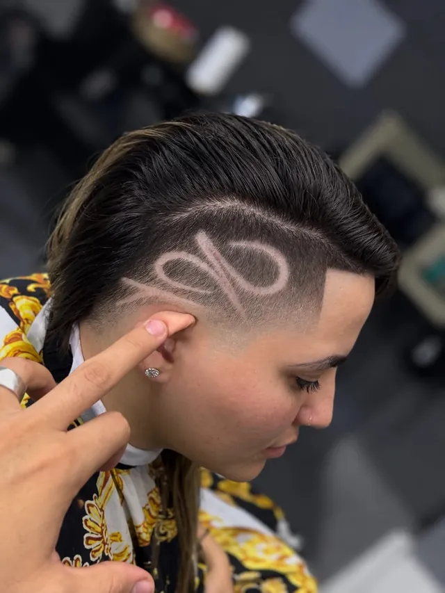
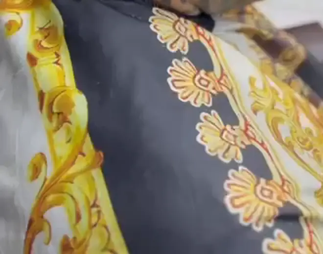

Barbería en Mérida, Yucatán
Cortes con firma. Diseños a mano alzada.
Fernando Yakin traza cada diseño directo en tu cabeza, sin plantillas: freestyle, fades, color y navaja. Cuéntale tu idea y aparta tu lugar.
- Freestyle
- Fades
- Color
- Tapers
- Rizos
- Texturizado
- Navaja
01 — El oficio
Sin plantilla. Solo pulso.
Freestyle quiere decir que el diseño se dibuja en el momento, a mano alzada, con máquina y navaja. Fernando Yakin lee la forma de tu cabeza y cómo cae tu pelo antes de trazar la primera línea; por eso ningún diseño sale igual a otro.
¿Traes una idea? Mándale una foto de referencia por WhatsApp. ¿No sabes qué quieres? Déjalo en sus manos.
- Especialidad
- Diseños freestyle a mano alzada
- También
- Fades, tapers, rizos, texturizados, diseños con color y perfilado con navaja
- Dónde
- Mérida, Yucatán
- Cómo agendar
- Por WhatsApp, directo con Fernando

Cada línea sale de la mano, no de un molde.
02 — El trabajo
El trabajo habla solo.
Fotos reales de cortes hechos en YakinStyle. Toca cualquiera para verla en grande.
Cada foto es un corte real, hecho en el sillón de YakinStyle.Nada de fotos de catálogo: esto es lo que sale de aquí.
03 — En movimiento
Míralo en movimiento.
Clips reales grabados en la barbería. Nada se reproduce solo: toca el que quieras ver y el sonido arranca cuando tú le das play.
04 — Servicios
La carta del sillón.
Precio y horario se platican por WhatsApp. Elige lo que te late y pregúntale directo a Fernando.
Diseños freestyle
Líneas y figuras dibujadas a mano alzada, directo en tu cabeza. La especialidad de la casa.
Preguntar por diseños freestyle en WhatsApp (se abre WhatsApp)Fades
Degradado limpio, del más bajo al más alto, con la transición bien difuminada.
Preguntar por fades en WhatsApp (se abre WhatsApp)Diseños con color
El diseño de líneas acompañado de color para que resalte todavía más.
Preguntar por diseños con color en WhatsApp (se abre WhatsApp)Tapers
Degradado discreto en patilla y nuca para un acabado limpio sin perder largo.
Preguntar por tapers en WhatsApp (se abre WhatsApp)Rizos
Corte pensado para el pelo rizado: forma arriba, limpieza a los lados.
Preguntar por rizos en WhatsApp (se abre WhatsApp)Texturizado
Volumen y movimiento arriba para que el pelo se vea con vida.
Preguntar por texturizado en WhatsApp (se abre WhatsApp)Perfilado con navaja
Contornos, líneas y acabados marcados con navaja.
Preguntar por perfilado con navaja en WhatsApp (se abre WhatsApp)
05 — El local
Luces hexagonales, capas de oro.
Un techo de LED hexagonal y capas negro con dorado estilo barroco: así se ve el lugar donde te vas a sentar.
- i.Techo de luces LED hexagonales
- ii.Capas negro con dorado, estilo barroco
- iii.Mérida, Yucatán. La ubicación exacta te la pasa Fernando por WhatsApp.

Tu próximo corte empieza con un mensaje.
- 01
Escribe
Manda un WhatsApp a Fernando con lo que tienes en mente.
- 02
Cuenta tu idea
Dile qué corte o diseño quieres. Si tienes foto de referencia, mándala.
- 03
Aparta tu lugar
Acuerdan día y hora, y llegas directo al sillón.